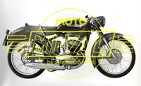
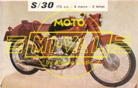
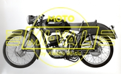
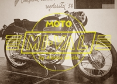
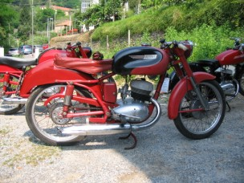
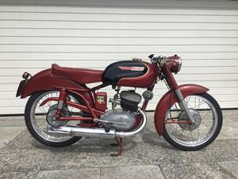

 |
 |
 |
 |
MOTORE: Monocilindrico 2 tempi, alesaggio e corsa 58 x 65 mm
Cilindrata effettiva 171,7 cc, potenza effettiva 9 CV a 5500 giri, rapporto di compressione 1:7
Velocità massima 135 km/h
Carburatore Dell'Orto SS28A
Accensione a spinterogeno
Cambio a 4 rapporti, trasmissione primaria e secondaria a catena
Frizione in bagno d'olio a dischi multipli
TELAIO A culla singola
Forcella anteriore telescopica idraulica
Sospensione posteriore a forcellone oscillante con ammortizzatore idraulico
Cerchione anteriore: 2" x 19" Cerchione posteriore: 2" 1/4 x 19" (N.B. 2" è la larghezza totale, non quella del canale)
Ruota anteriore: 2,5" x 19" Ruota posteriore: 2,75" x 19"
Capacità serbatoio 12 litri
Potenza impianto elettrico 60 W
Consumo norme CUNA - litri/100 km
Candela -
L'angolo dei conservati
 |
 |
 |